4410D10 FRONT SUSPENSION FRAME - R+R
- Path
- Procedures > 44 SUSPENSION AND WHEELS > 4410 FRONT SUSPENSION > 4410D FRAME AND CROSSMEMBER > 4410D10 FRONT SUSPENSION FRAME - R+R
- Kind
- repair procedure (removal / refitting; the operation number is the code)
- Applies to
- all engines; all production periods
- Interactive page
- https://sloeber94.github.io/elrnDB-aBrrSpdr/en/#/946002205
Applies to: all engines; all production periods
 Removing
Removing
 Refitting
Refitting- Position the vehicle on a lift.
- Make sure that the ignition key is in the OFF position, then disconnect the battery terminal (-).
Description | Connector | |
|---|---|---|
- | Battery |
1. Undo the fixing bolt (1a) and disconnect the steering column (1b) from the steering box.

Applies to: all engines; all production periods
Op. 4450B12 FRONT WHEELS (TWO) - R+R
1. Undo the nuts securing the front suspension lower wishbones to the wheel steering knuckles.
2. Undo the bolts securing the lower forks connecting the front suspension shock absorbers to the lower wishbone, lower wishbone side.

Applies to: all engines; all production periods
1. Undo the nuts fixing the steering rods to the steering knuckles.
2. Disconnect the steering rods (2a) from the front steering knuckle using the tool (2b).
Tool | Description | Function | Validity |
|---|---|---|---|
1871000700 | Extractor | Extracting steering rod from strut |

Applies to: all engines; all production periods
1. Undo the nuts (1a) and disconnect the front suspension anti-roll bar joints (1b).

Applies to: all engines; all production periods
1. Undo the lower bolts securing the reinforcements to the front suspension frame.
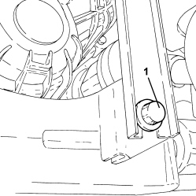
Applies to: all engines; all production periods
- Disconnect the front suspension lower wishbones from the wheel steering knuckle assemblies.
Op. 1076B72 INTERMEDIATE EXHAUST PIPE WITH HOSE SECTION - R+R
1. Undo the bolts fixing the power unit lower reaction rod, engine crankcase sump side.
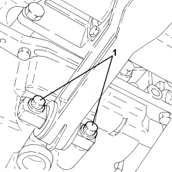
Applies to: all engines; all production periods
1. Undo the bolts fixing the power unit rear support flexible mounting, rigid support side.

Applies to: all engines; all production periods
- Secure the engine cooling radiator to the headlamp beam.
- Draw off the power assisted steering fluid from the reservoir using a suitable syringe.
1. Undo the connector (1a) and disconnect the supply pipe from the pump to the power assisted steering box (1b), power assisted steering box side.
2. Undo the connector (2a) and disconnect the return pipe from the power steering box to the intermediate pipe (2b), power assisted steering box side.
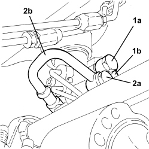
Applies to: all engines; all production periods
1. Undo the bolts fixing the front suspension frame to the bodyshell.
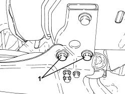
Applies to: all engines; all production periods
1. Position a hydraulic lift (1a) using tools (1b) to support the front suspension frame.
Tool | Description | Function | Validity |
|---|---|---|---|
1870835001 | Hydraulic lift | Rear suspension crossmember support |
Tool | Description | Function | Validity |
|---|---|---|---|
2000002300 | Support | Front suspension frame support |

Applies to: all engines; all production periods
- If the above hydraulic lift is not available, use a general hydraulic lift plus the adaptor shown in the drawing, which must be made up by the workshop to allow the use of the above frames

Applies to: all engines; all production periods
(*): Ensure the shank diameter fits the hydraulic lift used.
Applies to: all engines; all production periods
1. Unscrew the remaining bolts securing the rear suspension frame.

Applies to: all engines; all production periods
- Lower the hydraulic jack and remove the front suspension frame assembly.
1. Working at the bench, undo the bolts (1a) and remove the power unit lower reaction rod (1b) from the front suspension frame.

Applies to: all engines; all production periods
1. Undo the bolts (1a) and remove the anti-roll bar (1b) with joints from the front suspension frame.
2. Undo the bolts (2a) and remove the power steering box (2b) from the front suspension frame.
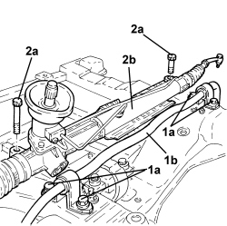
Applies to: all engines; all production periods
1. Undo the bolts (1a) and remove the flexible mounting for the power unit rear support (1b) from the front suspension frame.
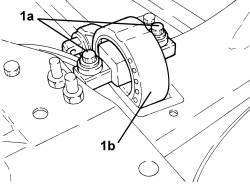
Applies to: all engines; all production periods
1. Undo bolts (1a), (1b) and remove the front suspension lower wishbones (1c) from the front suspension frame.

Applies to: all engines; all production periods
Refitting
Removing1. Refit the front suspension wishbones (1a) in their seats on the front suspension frame and secure by tightening bolts (1b) to the specified torque and then by tightening bolts (1c) to the specified torque.

Applies to: all engines; all production periods
1. Place the power unit rear support flexible mounting block (1a) in its housing on the frame and secure it by tightening the bolts (1b) to the recommended torque.
Component | Fastening | dia | Value (daNm) | Validity |
|---|---|---|---|---|
Timing side flexible mounting to rigid mount | Bolt (to be replaced) | M12 | 6.3 ÷ 7.7 + 90° |

Applies to: all engines; all production periods
1. Place the power steering box (1a) in its housing in the front suspension frame and secure it by tightening the bolts (1b) to the recommended torque.
Component | Fastening | dia | Value (daNm) | Validity |
|---|---|---|---|---|
Power assisted steering box | Bolt (to be replaced) | M12 | 11.3 ÷ 13.8 + 180° |
2. Place the anti-roll bar (2a) in its housing in the front suspension frame and secure it by tightening the bolts (2b) to the recommended torque.
Component | Fastening | dia | Value (daNm) | Validity |
|---|---|---|---|---|
Front suspension anti-roll bar | Front bolt | M8 | 2.2 ÷ 2.6 |
Component | Fastening | dia | Value (daNm) | Validity |
|---|---|---|---|---|
Front suspension anti-roll bar | Rear bolt (to be replaced) | M12 | 7.2 ÷ 8.8 + 90° |
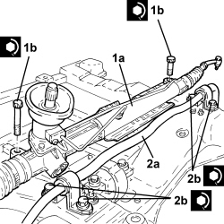
Applies to: all engines; all production periods
1. Place the power unit lower reaction link (1a) in its housing on the front suspension frame and secure it by tightening the bolts (1b) to the recommended torque.
Component | Fastening | dia | Value (daNm) | Validity |
|---|---|---|---|---|
Engine side lower reaction rod to front suspension frame | Bolt (to be replaced) | M12 | 6.3 ÷ 7.7 + 60° |

Applies to: all engines; all production periods
- Refit the front suspension frame assembly using the mounting tools and hydraulic lift.
- Tighten the bolts securing the front suspension frame to the bodyshell to the recommended torque.
Component | Fastening | dia | Value (daNm) | Validity |
|---|---|---|---|---|
Front suspension frame | Front bolt (to be replaced) | M14 | 16.2 ÷ 19.8 + 90° |
Component | Fastening | dia | Value (daNm) | Validity |
|---|---|---|---|---|
Front suspension frame | Centre bolt (to be replaced) | M14 | 11.7 ÷ 14.3 + 90° |
Component | Fastening | dia | Value (daNm) | Validity |
|---|---|---|---|---|
Front suspension frame | Rear bolt (to be replaced) | M14 | 9.9 ÷ 12.1 + 90° |
- Remove the tool and the hydraulic jack used to support the front suspension frame.
Tool | Description | Function | Validity |
|---|---|---|---|
2000002300 | Support | Front suspension frame support |
Tool | Description | Function | Validity |
|---|---|---|---|
1870835001 | Hydraulic lift | Rear suspension crossmember support |
1. Connect the return pipe from the power assisted steering box to the intermediate pipe (1a), power assisted steering box side and tighten the connector (1b) to the recommended torque.
Component | Fastening | dia | Value (daNm) | Validity |
|---|---|---|---|---|
Return pipe from power assisted steering box | Connector | M12 | 2.7 ÷ 3.3 |
2. Connect the supply pipe from the pump to the power assisted steering box (2a), power assisted steering box side and tighten the connector (2b) to the recommended torque.
Component | Fastening | dia | Value (daNm) | Validity |
|---|---|---|---|---|
Delivery pipe from pump to power assisted steering box - power steering box side | Connector | M14 | 3.6 ÷ 4.4 |
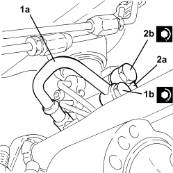
Applies to: all engines; all production periods
1. Tighten the bolts fixing the power unit rear support flexible mounting, rigid support side to the recommended torque.
Component | Fastening | dia | Value (daNm) | Validity |
|---|---|---|---|---|
Timing side flexible mounting to body | Bolt | M10 | 5.4 ÷ 6.6 |
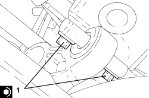
Applies to: all engines; all production periods
1. Tighten the bolts fixing the lower reaction rod for the power unit, engine crankcase sump side to the recommended torque.
Component | Fastening | dia | Value (daNm) | Validity |
|---|---|---|---|---|
Engine side lower reaction rod to engine | Bolt | M10 | 5.4 ÷ 6.6 |
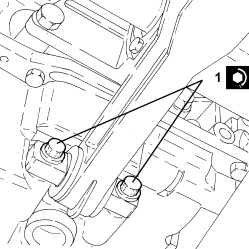
Applies to: all engines; all production periods
Op. 1076B72 INTERMEDIATE EXHAUST PIPE WITH HOSE SECTION - R+R
- Connect the front suspension lower wishbones to the wheel steering knuckle assemblies.
1. Tighten the lower bolts fixing the reinforcements to the front suspension frame to the recommended torque.
Component | Fastening | dia | Value (daNm) | Validity |
|---|---|---|---|---|
Underbody reinforcements | Bolt | M12 | 7.2 ÷ 8.8 |
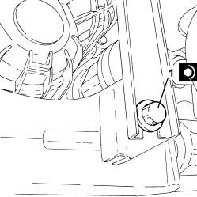
Applies to: all engines; all production periods
1. Connect joints (1a) to the front suspension stabiliser bar and secure by tightening nuts (1b) to the specified torque.
Component | Fastening | dia | Value (daNm) | Validity |
|---|---|---|---|---|
Front suspension anti-roll bar joint - anti-roll bar side | Nut | M12 | 9.0 ÷ 11.0 |

Applies to: all engines; all production periods
1. Connect the steering links (1a) to the front stub axles and tighten the nuts (1b) to the specified torque.
Component | Fastening | dia | Value (daNm) | Validity |
|---|---|---|---|---|
Steering rod to wheel strut | Nut | M12 | 9.0 ÷ 11.0 |
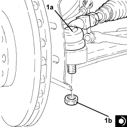
Applies to: all engines; all production periods
1. Tighten the new bolts securing the lower forks connecting the front suspension shock absorbers to the lower wishbone, lower wishbone side, to the specified torque.
Component | Fastening | dia | Value (daNm) | Validity |
|---|---|---|---|---|
Lower fork connecting front suspension shock absorber to lower wishbone - lower wishbone side | Bolt (to be replaced) | M14 | 4.5 ÷ 5.5 + 90° |
2. tighten the nuts securing the front suspension lower wishbones to the wheel steering knuckles to the specified torque.
Component | Fastening | dia | Value (daNm) | Validity |
|---|---|---|---|---|
Front suspension lower wishbone - strut side | Nut | M14 | 8.1 ÷ 9.9 |
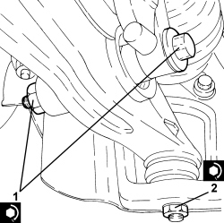
Applies to: all engines; all production periods
Op. 4450B12 FRONT WHEELS (TWO) - R+R
1. Connect steering column (1a) to the power steering box pinion and secure by tightening a new bolt (1b) to the specified torque.
Component | Fastening | dia | Value (daNm) | Validity |
|---|---|---|---|---|
Steering column | Bolt (to be replaced) | M8 | 2.3 ÷ 2.8 |

Applies to: all engines; all production periods
- Connect the negative battery terminal.
- Remove the vehicle from the lift.
Topics linked from this page (3)
- 1076B72 INTERMEDIATE EXHAUST PIPE WITH HOSE SECTION - R+R
- 4450B12 FRONT WHEELS (TWO) - R+R
- A001 BATTERY
Topics that link to this page (13)
- S047 STEERING WHEEL OSCILLATIONS/VIBRATIONS
- 1008B20 POWER UNIT REAR SUPPORT FLEXIBLE MOUNTING - REPLACE
- 1020A26 CRANKCASE SUMP - R.R CLEAN MATING SURFACES AND APPLY SEALANT FOR VEHICLES WITH AIR CONDITIONING
- 1020D36 FLYWHEEL SIDE OIL SEAL - REPLACE FOR MANUAL GEARBOX WITH HYDRAULIC SELECTION VERSIONS
- 1020D38 FLYWHEEL SIDE OIL SEAL - REPLACE
- 1024B10 ENGINE FLYWHEEL - R + R FOR VERSIONS WITH MANUAL GEARBOX
- 1024B11 ENGINE FLYWHEEL - R.R. FOR MANUAL GEARBOX WITH HYDRAULIC SELECTION VERSIONS
- 1810A20 CLUTCH - R + R
- 1810A28 CLUTCH - R.R. FOR MANUAL GEARBOX WITH HYDRAULIC SELECTION VERSIONS
- 1820B30 CLUTCH HYDRAULIC ACTUATOR - R.R.
- 2110A10 MANUAL GEARBOX AND DIFFERENTIAL - R + R
- 2110A11 MANUAL GEARBOX WITH DIFFERENTIAL - R.R. FOR VERSIONS WITH HYDRAULIC SELECTION
- 4410C10 FRONT SUSPENSION ANTI-ROLL BAR - R+R - CHECK WHEEL GEOMETRY SEPARATELY